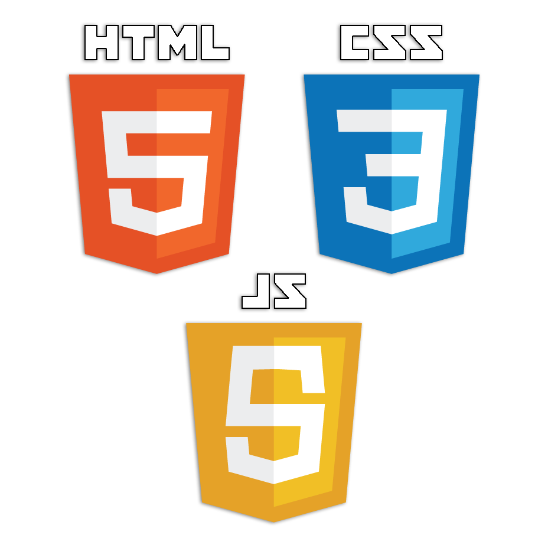
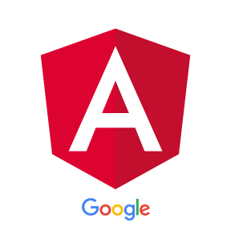

JavaScript
par Arthur Fauquenot
Contexte
Langage de scripts
Éxécution

HTML + CSS + JS
Premières utilisations
1995 ~ 2008
Création
1995
Dynamiser des pages web
jQuery
2006
$("#logo-jquery").on('click', function() {
$(this).fadeOut();
});Révolution du JavaScript
2008 ~ 2017
Google Chrome
2008
Moteur d'éxécution de Chrome
Librairies graphiques
Visualisation de données, graphiques, 3D...
Chart.js
D3.js
WebGL
Single Page Application
Des frameworks pour des applications web performantes

Angular
React
Backbone.js
Node.js
JavaScript côté serveur et temps réel
Node.js
Conclusion
Fin
Présentation réalisée avec Reveal.js